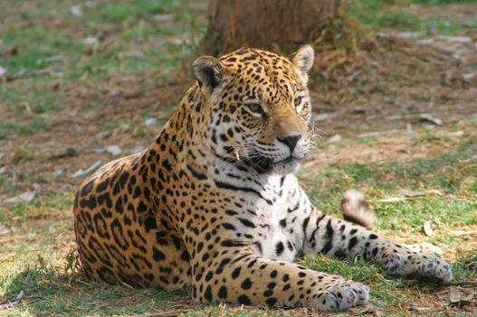

Najgroźniejsze Drapieżniki Top 3!
Drapieżniki
Definicja drapieżników określa je jako zwierzęta żywiące się innymi zwierzętami żywymi lub niedawno zabitymi. W odróżnieniu od pasożytów drapieżnik powoduje natychmiastową śmierć ofiary. Drapieżniki żyją na całym świecie, we wszystkich regionach klimatycznych. Wśród nich występują ssaki drapieżne, lecz także ptaki, gady i ryby. Ich charakterystyczną cechą jest to, że są to organizmy mięsożerne. Wśród ssaków drapieżnych występują zarówno zwierzęta lądowe jak niedźwiedzie i koty, jak i wodne jak morsy, foki czy wydry. W Polsce występuje 12 gatunków drapieżników. Drapieżniki wyróżniają się uzębieniem, budową umożliwiającą pogoń i chwytanie ofiary, silnymi pazurami i mięśniami szczęki oraz krótkim układem pokarmowym.

reklama